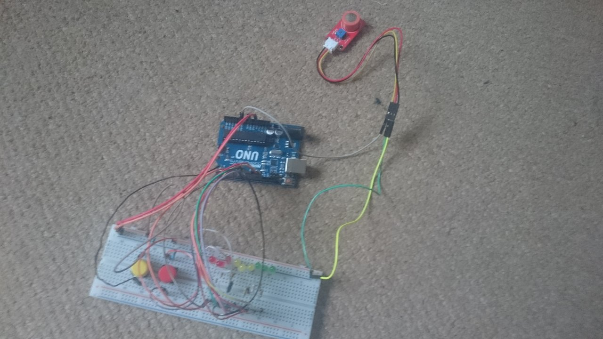
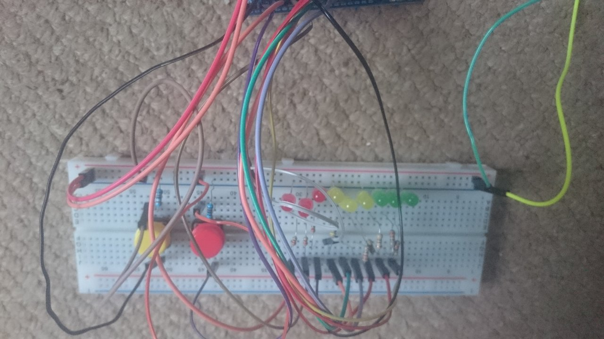
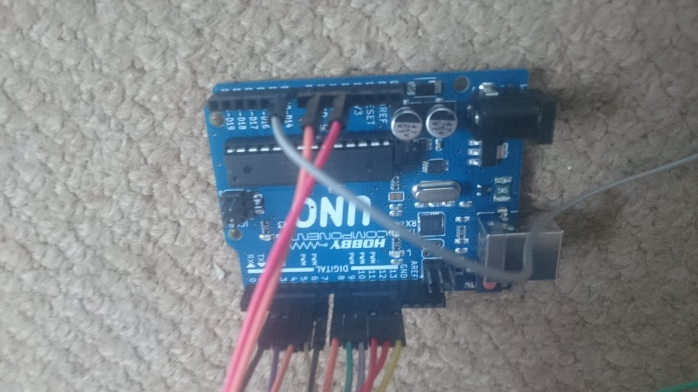

WELCOME
PROJECTS
CV
CONTACT
Arduino stuff



Previous
Next
Arduino code
int mq3_analogPin = A0; // connected to the output pin of MQ3 int readAlcoholButton = 3; int writeAlcoholButton = 4; void setup() { Serial.begin(9600); // open serial at 9600 bps pinMode(readAlcoholButton, INPUT); pinMode(writeAlcoholButton, INPUT); pinMode(6, OUTPUT); pinMode(7, OUTPUT); } void loop() { int alcoholValue = analogRead(mq3_analogPin); digitalWrite(6, LOW); digitalWrite(7, LOW); if(digitalRead(readAlcoholButton) == HIGH){ Serial.println(alcoholValue); if(alcoholValue < 300){ digitalWrite(6, HIGH); digitalWrite(7, LOW); } else if(alcoholValue >500){ digitalWrite(6, LOW); digitalWrite(7, HIGH); } } if(digitalRead(writeAlcoholButton) == HIGH){ Serial.println("ddd"); } delay(100); }
Download arduino code
Processing code
import processing.serial.*; import twitter4j.conf.*; import twitter4j.*; import twitter4j.auth.*; import twitter4j.api.*; import java.util.*; import processing.serial.*; Status status; Twitter twitter; String lines []; Serial port; String string = ""; int pos1 = 100; int pos2 = 0; void setup(){ port = new Serial(this, Serial.list()[1], 9600); port.bufferUntil('\n'); size(800, 600); background(120); //loading twitter account data file; lines = loadStrings("secret.txt"); //loading information into configuration object ConfigurationBuilder cb = new ConfigurationBuilder(); cb.setOAuthConsumerKey(lines[0]); cb.setOAuthConsumerSecret(lines[1]); cb.setOAuthAccessToken(lines[2]); cb.setOAuthAccessTokenSecret(lines[3]); TwitterFactory factory = new TwitterFactory(cb.build()); //creating twitter instance twitter = factory.getInstance(); } void draw(){ background(120); text(string, pos1, pos2); } void serialEvent(Serial readPort){ String portContents = readPort.readStringUntil('\n'); int value = int (portContents.trim()); if(portContents != null) { if(value < 300){ println("Less than 300"); tweet(portContents); } else if(value > 300 && value < 400){ println("Bigger than 300 ess than 400"); } else if(value > 500 && value < 600){ println("500-600"); } } println(portContents); } void tweet(String val){ try{ //creating string for tweet status; hour; minute; second String statusString = ""; String hourString = ""; String minuteString = ""; String secondString = ""; //extracting hour, minute and second to variables int hour = hour(); int minute = minute(); int second = second(); //formatting hourString. Generally, string has to be formatted, otherwise //format is e.g. '5' instead of '05'. if(hour >= 0 && hour< 10){ hourString = "0" + hour; } else{ hourString = "" + hour; } //formatting minuteString if(minute >= 0 && minute < 10){ minuteString = "0" + minute; } else{ minuteString = "" + minute; } //formatting secondString if(second >= 0 && second < 10){ secondString = "0" + second(); } else{ secondString = "" + second; } //foratting tweet status; it displays actual hour and alcohol value statusString = "Reading at: " + hourString + ":" + minuteString + ":" + secondString +"." + "Your actual alcohol value is: " + val; //updating twitter Status status = twitter.updateStatus(statusString); //displaying tweet in processing console System.out.println("Status updated to[" + status.getText() + "]."); } catch(TwitterException te){ System.out.println("Error " + te.getMessage()); } }
Download processing code